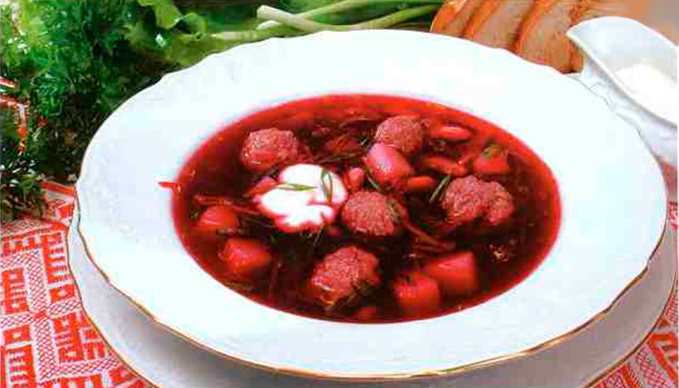
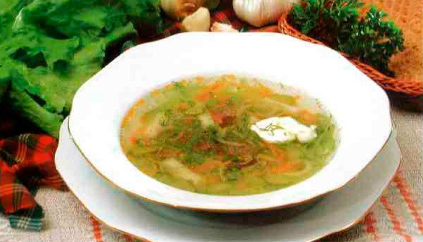
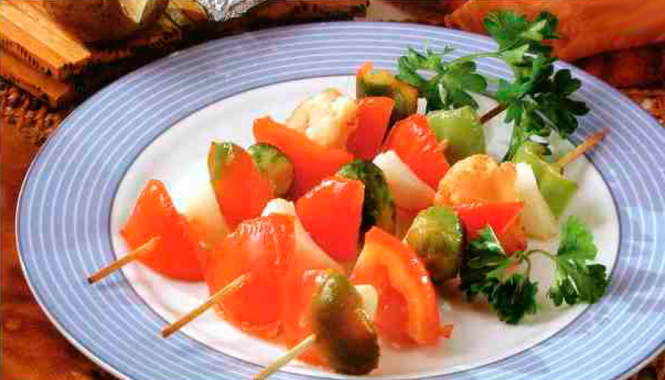
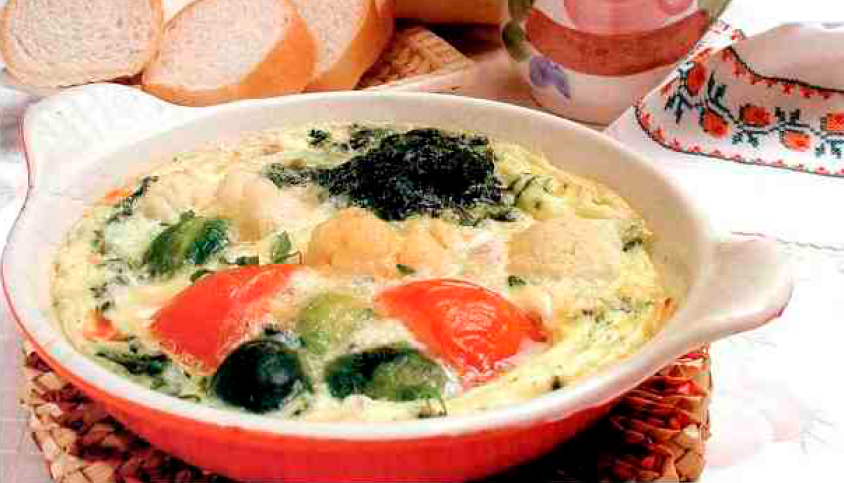

ТАРТАЛЕТКИ С ЗАКУСКОЙ

Инградиенты
Для теста
- Мука 170 г
- Маргарин 40 г
- Молоко 40 г
- Яичный желток 1 шт
- Сахар 1 чайная ложка
- Соль
Для начинки
- Варенная или жаренная птица 200 г мякоти
- Сыр 100 г
- Майонез 4 столовые ложки
- Мускатный орех
Для оформления
- Маслины 5 шт
- Зелень петрушки
Приготовление
Для приготовления тарталеток растворите в молоке соль, сахар, введите часть муки, желток и хорошо размешайте. Взбейте маргарин, соедините приготовленной массой и оставшейся мукой. Раскатайте тесто в пласт толщиной 2—3 мм, вырежьте кружки по размеру формочек. Кружочки выложите в смазанные маргарином формочки, прижмите к внутренней поверхности, дно проколите вилкой. Выпекайте в духовке при 240 С до золотистого цвета. Охладите.
Для приготовления начинки варинную птицу пропустите 2 раза через мясорубку, добавьте тертый сыр, майонез, 1/2 чайной ложки тертого мускатного ореха и 1 столовую ложку мелко рубленной зелени. Хорошо взбейте.
Приготовленной начинкой наполните тарталетки.
Оформите маслинами и зеленью.
НА 5 ПОРЦИЙ
Время приготовления: 1 час 30 минут
Назад в менюКАНАПЕ С ГРИБАМИ
Инградиенты
- Батон 1 шт
- Свежие или мороженые грибы 90 г
- Сливочное масло 1 крупная головка
- Острые сырные чипсы 200 гр
- Сыр 50 гр
- Оливки разного цвета без косточек
- Сладкий перец разного цвета
- Молотый перец
Приготовление
С батона срежьте корочки, нарежьте его вдоль широкими ломтиками толщиной 5 мм и выемкой для печенья вырежьте кружочки. Обжарьте кружочки на масле до образования хрустящей корочки.
Грибы и лук мелко нарежьте. Обжарьте на масле, добавьте грибы и обжаривайте все вместе 15—20 минут. Масса должна получиться сочной. Посолите, поперчите н добавьте раскрошенные чипсы.
Смажьте хлебные кружочки грибной массой. оформите нарезанными колечками оливками, кусочками перца п посыпьте тертым сыром.
НА 8 ПОРЦИЙ
Время приготовления: 40 минут
Назад в менюБОРЩ СИБИРСКИЙ
Инградиенты
- Свекла 160 г
- Капуста, нашинкованная 80 г
- Картофель, фасоль, морковь и репчатый лук по 40 г
- Томатное пюре 30 г
- Топленое масло 20 г
- Чеснок 2 зубчика
- Сахар 10 г
- Столовый уксус 1 чайная ложка
- Говяжий бульон 800 г
Для фрикаделек:
- Говяжий фарш 120 г
- Репчатый лук 10 г
- Яйца 1/2 шт.
- Сметана 20 г
- Соль, перец
- Рубленная зелень
Приготовление
Фасоль замочите на 8 часов и холодной воде, промойте, залейте горяче й водой, сварите до готовности без соли.
Лук нарежьте соломкой, спассеруйте в половине нормы масла, добавьте нарезанную соломкой морковь, обжаривайте 5 минут при помешивании, положите томатное шоре и прогрейте. Свеклу нарежьте соломкой. слегка обжарьте в оставшемся масле, добавьте немного бульона, сахар, 1/3 нормы уксуса и гушите до размягчения, В конце положите овощи с томатом.
В кипящий бульон введите капусту. дайте закипеть, добавьте картофель, нарезанный кубиками, и варите 10 минут. Положите тушеную свёклу, вареную фасоль. чеснок н специи. Варите еще 10 минут.
Пропустите фарш и лук через мясорубку, дооавьте яйцо, воду, соль, перец, взбейте. Сформуйте фрикадельки п отваривайте их в подсоленной воде 15 минут. Положите в тарелку, налейте борщ, заправьте сметаной, посыпьте зеленью.
НА 4 ПОРЦИИ
Время приготовления: 50 минут
Назад в менюРАССОЛЬНИК ДОМАШНИЙ
Инградиенты
- Мясной бульон 750 г
- Вареное мясо 100 г
- Свежая капуста 100 г
- Картофель 180 г
- Соленые огурцы 60 г
- Морковь 40 г
- Корень петрушки 60 г
- Корень сельдерея 20 г
- Репчатый лук 80 г
- Топленое масло 20 г
- Сметана 20 г
- Зелень10 г
- Соль, перец, лавровый лист
- Огуречный рассол 1 стакан
Приготовление
Морковь и лук нарежьте соломкой и спассеруйте на масле. Свежую капусту, коренья сельдерея и петрушки нашинкуйте соломкой. Картофель нарежьте брусочками.
Соленые огурцы очистите от кожицы, нарежьте ломтиками наискось и припустите в небольшом количестве бульона.
В кипящий бульон положите капусту, доведите до кипения, добавьте картофель, белые коренья, через 5 мнн - паесерованные морковь, лук и припущенные огурцы. Заправьте специями и варите до готовности. Готовый рассольник заправьте процеженным н прокипяченным оп речным рассолом.
При подаче положите кусочки пареного мяса, заправьте сметаной и посыпьте рубленой зеленыо.
НА 4 ПОРЦИЙ
Время приготовления: 15 минут
Назад в менюШАШЛЫК ИЗ ОВОЩЕЙ
Инградиенты
- Смесь овощей (картофель, морковь, брюква, горох, бобы или цветная капуста), нарезанных кубиками 450 г
- Маленькая головка репчатого лука 1 шт
- Помидры 2-3 штуки
- Красный сладкий перец 1 шт
- Сливочное масло 3 столовые ложки
- Порошок чили
- Молотый кориандр 2 чайные ложки
- Молотая куркума 1/2 чайной ложки
- Соль
Приготовление
Овощи обработайте: кочешки катеты разрежьте пополам, стручки перца нарежьте крупными ломтикамиб лук и помидоры — дольками. Нанижите овощи вперемежку на шампуры, обжарьте в гриле или духовке до образования корочки.
Для соуса смешайте майонез, рубленые корнишоны и молотый перец.
В кипящий бульон положите капусту, доведите до кипения, добавьте картофель, белые коренья, через 5 мнн - паесерованные морковь, лук и припущенные огурцы. Заправьте специями и варите до готовности. Готовый рассольник заправьте процеженным н прокипяченным оп речным рассолом.
Подавайте шашлыки на блюде, оформив зеленью. Соус подайте отдельно.
НА 4 ПОРЦИЙ
Время приготовления: 30 минут
Назад в менюОМЛЕТ С ОВОЩАМИ
Инградиенты
- Яйца 450 г
- Маленькая головка репчатого лука 4 шт
- Молоко 3 столовые ложки
- Крепкие помидоры 3 шт
- Свежий шпинат 275 г
- Варенный картофель 100 г
- Сливочное масло 25 г
- Рубленный шалфей 1 чайная ложка
- Соус тобаско несколько капель
- Соль, перец
Приготовление
На половине нормы масла обжарьте сваренный н нарезанный шпинат, очищенные и крупно нарезанные помидоры, нарезанный кубиками картофель. Посыпьте солью. перцем, шалфеем п полейте соусом табаско. Влейте взбитые с молоком яйца, перемешайте и жарьте в течение 4 минут до загустения массы. Осторожно приподнимите край и проверьте готовность. Переложите омлет на большую тарелку и полейте оставшимся растопленным маслом.
Можно готовить и подавать омлет на порционной сковороде.